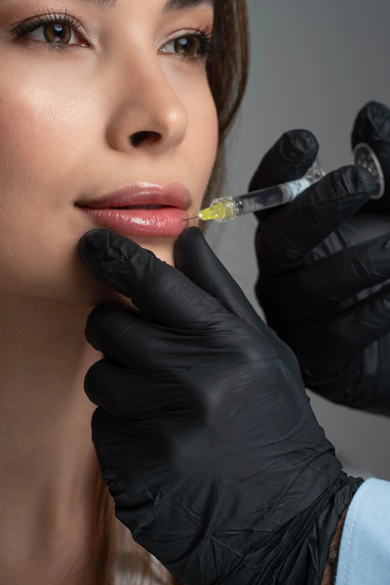
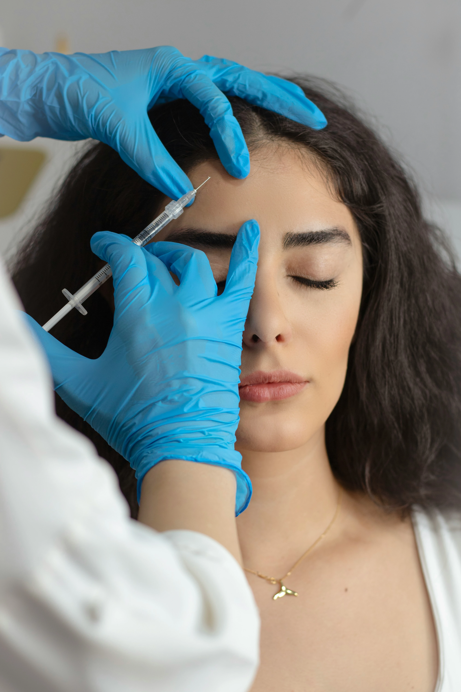
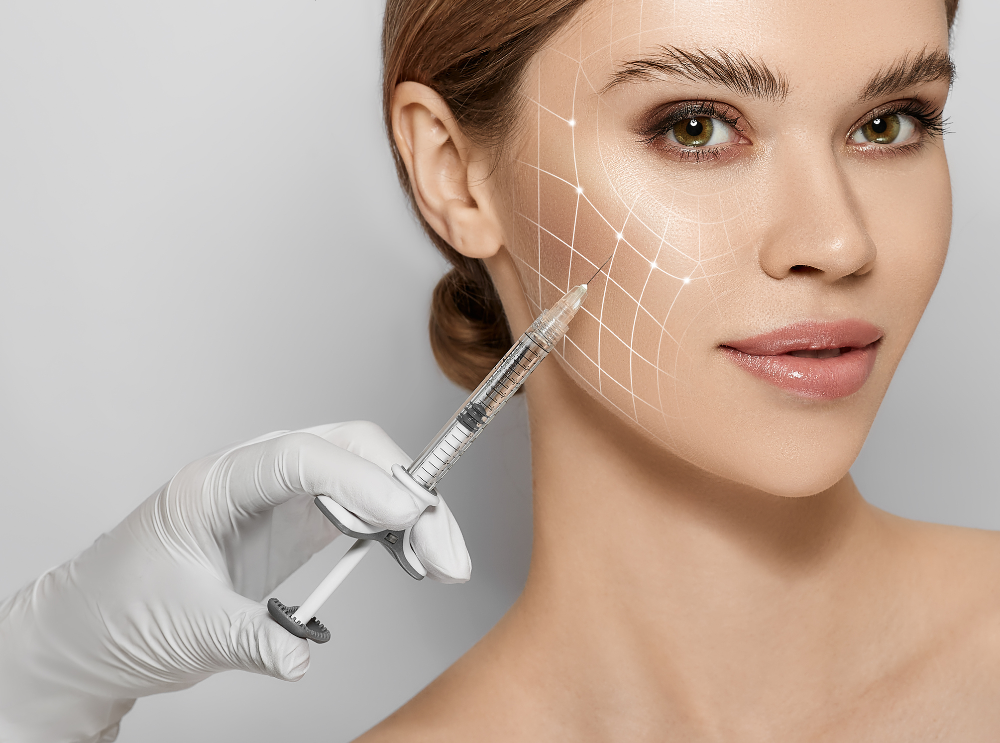
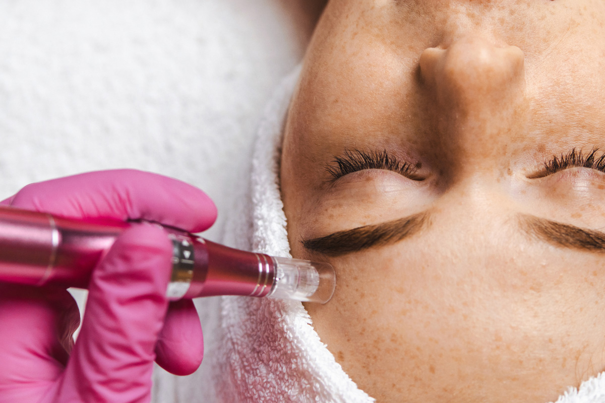
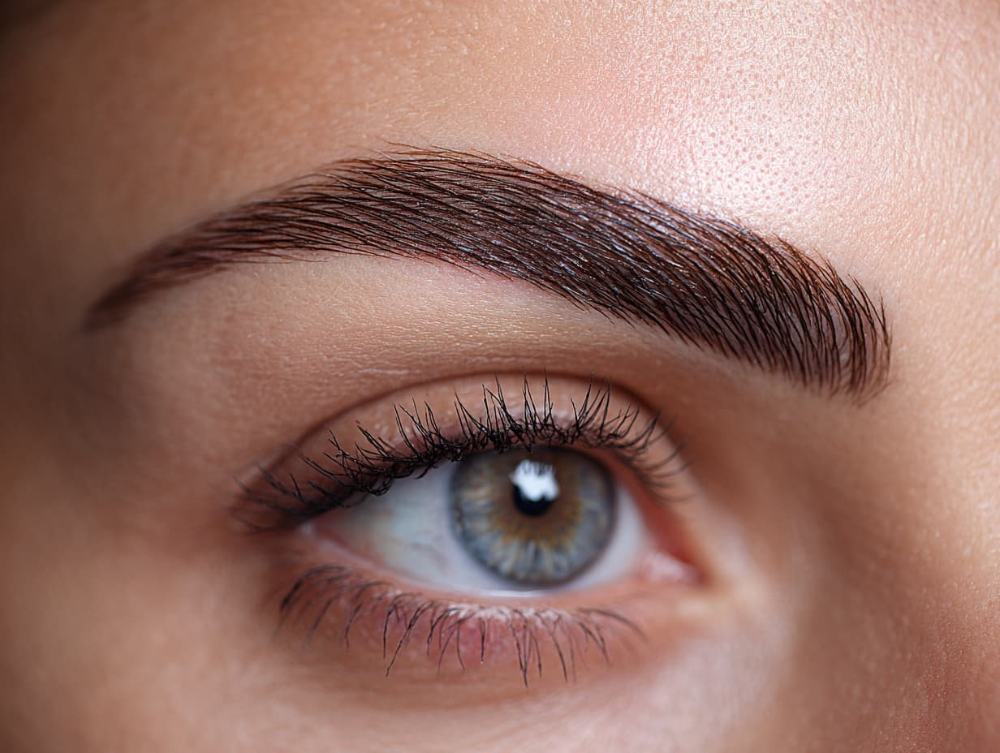
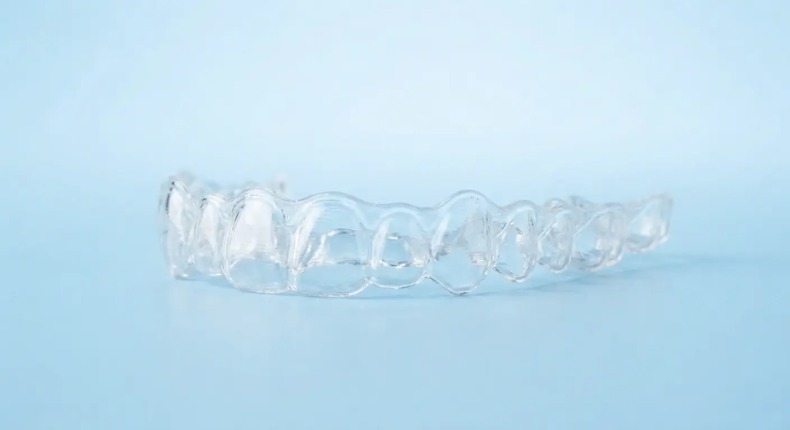
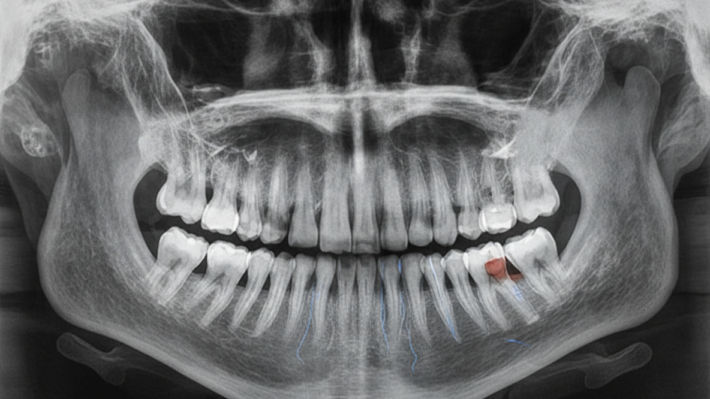

Natural-looking lip filler, facial filler and Botox, including Botox for jaw clenching, at Emerald Dental Clinic in the centre of Tirana. Your first consultation is free.
Your smile and your face work as one picture. Lips frame your teeth, cheeks support your smile, and jaw muscles decide how much strain your teeth take every day.
That is why filler and Botox in Tirana fit naturally into a dental clinic. Our dentists know the anatomy of the mouth, lips and jaw in detail, and we plan every treatment to look balanced and natural, never overdone. Whether you are searching for filler in Albania, Botox in Albania, or simply a dentist who can look at the whole picture, Emerald Dental offers both under one roof, in central Tirana on Rruga e Kavajes.
Every treatment starts with a free consultation. We listen to what you want, assess your face and teeth, explain the options honestly, and give you a clear quote. If you decide filler or Botox is not for you, there is no pressure.
Book a free consultation

Lip injections should look like your lips on their best day, not like a different pair of lips.
We use hyaluronic acid filler, a substance your body already produces, to add soft volume, define the border of the lips, balance a smaller upper lip, correct asymmetry and hydrate dry, thin lips. The filler is placed with very fine needles or a cannula after numbing cream, and a session usually takes 30 to 45 minutes.
Volume is lost with age, and filler restores it where it matters, without surgery and with almost no downtime.
Restores mid-face volume and lifts a tired, flat look, supporting the corners of your smile.
Improves profile balance and defines the jawline for a stronger, more harmonious face shape.
Softens the lines running from nose to mouth and around the corners of the lips.
Reduces the look of shadows and hollowness for a more rested appearance, in suitable candidates.
Fine "smoker's lines" above the lip can be softened and the lip border refreshed.
Book the free consultation and we will map out what makes the biggest difference for the least product.

Botox relaxes the muscles that crease your skin, so lines soften and new ones are less likely to form.
A few tiny injections take about 10 to 15 minutes. Effects begin within 3 to 7 days, are complete at around two weeks and last about 3 to 4 months. Our aim is to keep your expressions alive: you will look refreshed, not frozen.

If you wake up with a tight jaw, headaches or sensitive, worn teeth, you may be clenching or grinding at night.
Bruxism is one of the most common reasons we see worn enamel, cracked fillings, chipped teeth and failing crowns. Small doses of Botox in the masseter muscles, the powerful muscles at the angle of the jaw, reduce how hard you can clench. Teeth and restorations are protected, and many patients notice less jaw pain and fewer tension headaches.
If bruxism has already damaged your teeth, we can repair them with crowns or veneers and protect the result with Botox, so the repair lasts.
Ask about bruxism treatment
Salmon DNA (PDRN) is one of the most talked-about skin treatments, and it is now available at Emerald Dental.
Polynucleotides, often called PDRN, are purified fragments of salmon DNA. Micro-injected into the skin, they support its natural repair, improve hydration and leave skin looking plumper, smoother and more even. Because it works on skin quality rather than volume, it suits delicate areas such as under the eyes, the neck and the skin around the mouth.
It combines well with dermapen microneedling (about 4 weeks apart) and with Botox for an overall fresher face. Not suitable with fish allergy, pregnancy or active skin infection.

Hundreds of ultra-fine needle points trigger your skin to renew itself, with no downtime worth worrying about.
The Dermapen creates thousands of controlled micro-channels in the skin. This stimulates collagen and elastin, refines texture and lets skincare and serums work better. Sessions take about 30 to 45 minutes after numbing cream, and the skin looks pink, like mild sunburn, for 24 to 48 hours.
For deeper renewal, pair it with salmon DNA injections. Not suitable during acne breakouts, skin infection or pregnancy, or soon after isotretinoin treatment.

Wake up with brows that already look done, without a pencil.
Microblading uses a fine hand tool to deposit pigment in delicate, hair-like strokes that blend with your own brows. We start by mapping a shape that suits your face, agree the colour with you and numb the area before we begin. The whole session takes about 60 to 90 minutes.
Expect brows to look darker for the first week, then flake and soften before settling at their true colour. Keep them dry, avoid makeup, sun and swimming for 7 to 10 days. Not suitable during pregnancy or with skin conditions in the brow area.
Book your free consultation in Tirana. We will assess your face and teeth together and give you an honest recommendation and a clear quote.
Filler adds, Botox relaxes. Filler is a soft gel that restores volume and shape: lips, cheeks, chin, jawline and folds. Botox is a purified protein that temporarily relaxes specific muscles: forehead, frown lines, crow's feet and the jaw. Many patients use both, because volume loss and muscle-driven lines often appear together.
Treatment is not recommended during pregnancy or breastfeeding, with an active infection or skin condition at the injection site, with allergy to the ingredients, or with certain neuromuscular conditions. Results vary between people, and your dentist will tell you honestly whether treatment suits you.
Fuller lips and a relaxed face show off your teeth. Make sure they look their best.
Many patients add professional teeth whitening and a deep cleaning to their filler or Botox appointment. A cleaner, whiter smile is the most visible upgrade, and it can be done on the same trip. If whitening cannot reach your goal, porcelain veneers offer a lasting, natural alternative.
See teeth whitening in TiranaOur consultation is free and covers your teeth as well as your face. It often uncovers small problems that are cheap to fix now and costly to ignore.
 Cavities and deep decay
Cavities and deep decaySmall cavities are filled in one visit. Left alone they reach the nerve and need a root canal.
Endodontics Worn, cracked or heavily filled teeth
Worn, cracked or heavily filled teethOften caused by bruxism. A zirconia crown protects the tooth from fracture and extraction.
Dental crowns Chipped, stained or uneven teeth
Chipped, stained or uneven teethThin porcelain veneers reshape the smile to match your new, balanced facial look.
Porcelain veneers Missing teeth
Missing teethMissing teeth cause the cheeks and lips to sink. Implants restore bone and facial support.
Dental implants in Albania
Crowded or crooked teethStraighter teeth improve your smile line and make cleaning easier.
Invisalign & clear aligners
Bone lossBone grafts and sinus lifts rebuild the foundation for implants.
Oral and maxillofacial surgeryTravelling from abroad? Read about dental tourism in Albania and see our price list.
Send the form or a WhatsApp message.
Face and teeth assessment, plan and written quote.
Filler or Botox, usually 15 to 45 minutes.
Aftercare advice and a review if needed.
Emerald Dental Clinic in central Tirana, on Rruga e Kavajes, offers lip filler, facial filler and Botox, including Botox for jaw clenching (bruxism). Your first consultation is free.
Hyaluronic acid lip filler typically lasts around 6 to 12 months, depending on the product, the amount used and your metabolism. Results are gradual to fade, and the filler can be topped up.
Botox starts to work within 3 to 7 days, with full results at about 2 weeks. Effects usually last 3 to 4 months for wrinkles, and often 4 to 6 months when used on the jaw muscles.
Yes. Botox injected into the masseter muscles weakens the clenching force, which can reduce jaw pain, tension headaches and wear on the teeth. It does not cure the cause of bruxism, so it is often combined with a night guard.
Most patients describe mild discomfort. Numbing cream is used for lip filler, and many fillers contain local anaesthetic. Botox uses very fine needles and takes only a few minutes.
Filler adds volume and shape, for example to lips, cheeks, chin or lines around the mouth. Botox relaxes muscles to soften expression wrinkles, such as forehead lines, frown lines and crow's feet, and to ease jaw clenching.
Temporary redness, swelling or small bruises are common. Filler and Botox are not recommended during pregnancy or breastfeeding, with active skin infection at the injection site, or with certain neuromuscular conditions. Your dentist reviews your medical history first.
Yes. Many patients combine a free dental check-up, teeth whitening, veneers or crowns with filler or Botox in the same trip. Your dentist plans the order of treatments so the results complement each other.
Salmon DNA injections (polynucleotides, often called PDRN) are skin-quality injections that help hydrate and renew the skin. A glow is often noticed within 1 to 2 weeks, results build over about 4 weeks and commonly last around 6 months, so a top-up every 6 months is usually suggested. The treatment costs €200 at Emerald Dental.
Dermapen microneedling costs €60 per session at Emerald Dental in Tirana. Most skin concerns need a course of 3 to 6 sessions about 4 weeks apart, followed by maintenance every 3 to 6 months.
Microblading typically lasts 12 to 18 months. A touch-up 4 to 6 weeks after the first session perfects the shape and colour, and a yearly refresh keeps the brows looking fresh. At Emerald Dental microblade eyebrows cost €80.
At Emerald Dental, Botox costs €80 per zone and filler costs €70 per 0.5 cc. The free consultation confirms exactly how many zones or how much filler you need before you decide.
Clear prices, no surprises. Your consultation is free, and we confirm exactly what you need before any treatment.
| Treatment | Unit | Price | Good to know |
|---|---|---|---|
| Botox | 1 zone | €80 | Forehead, frown lines, crow's feet and more. Lasts about 3 to 4 months. |
| Filler | 0.5 cc | €70 | Lips, cheeks, chin and folds. Typically lasts 6 to 12 months. |
| Salmon DNA injection | per treatment | €200 | A course of 3 sessions is often recommended. |
| Dermapen | per session | €60 | Best results from a course of 3 to 6 sessions. |
| Microblade eyebrows | per treatment | €80 | A touch-up is recommended after 4 to 6 weeks. |
Prices are in euros. The final quote is confirmed after your free consultation. Looking for dental prices? See the full dental price list.
Tell us what you would like to improve. We reply as soon as possible with advice and a clear quote.
Prefer to talk to us directly?